CONTRIBUTORS
- Daniel Winter
- Subject Matter Expert – ‘Neuronal Activity’
- Jacob Li
- Peer Reviewer
- Ada Langford
LEARNING OBJECTIVES
After reading this chapter, students should be able to …
- LO1 (Remember): Define spike and LFP
- LO2 (Understand): Describe how brain activity repeats in rhythms (of different speeds)
- LO3 (Apply): Use breathing as an example of how a body rhythm can affect brain rhythm
- LO4 (Analyze): Compare how scientists pull spikes and rhythms out of recordings and the limitations of these methods
- LO5 (Understand): Explain one way spiking neural networks use timing that artificial neural networks do not
CHAPTER OUTLINE
- What is Being Measured
- Neural Activity is Rhythmic
- Connection to Slower Body Rhythms
- Getting a Signal from a Recording
- From Biological to Artificial
CHAPTER WRITTEN CONTENT
- What is Being Measured?
When scientists put a thin wire (an electrode) into the brain, they record changes in voltage outside the cells, a method called extracellular recording. What results is a noisy wave-like line, containing spikes and local field potentials (LFPs). Telling these apart, and distinguishing extracellular recordings from voltage measured inside a cell, is the first step towards understanding how neurons communicate and how they relate to rhythms.
A spike is an action potential; it’s a rapid change in voltage across a cell membrane that neurons use to communicate with one another.A typical neuron has a resting membrane voltage of about -70 mV (relative to the outside of the cell). Stimuli make the inside of the cell less negative until it hits a trigger point (threshold around -55 mV), causing voltage-gated sodium channels to open. This causes depolarization, causing the sharp spike up to +30 mV. Sodium channels then inactivate and potassium channels open, letting potassium rush out to drop the voltage back down, a process called repolarization. The important thing to note is that the neuron either reaches the threshold and fires an action potential or remains below the threshold and does not fire; exact voltage values vary across neurons.
But these neurons are seldom isolated; on average, a single neuron in the human brain connects directly to about 1,000 to 10,000 other neurons through contact points called synapses. To extract information from these neurons, scientists measure electrical signals with electrodes. For example, a local field potential (LFP) reflects the combined transmembrane currents of many neurons, especially synaptic currents, as recorded near an electrode (Buzsáki et al., 2012). Its amplitude also depends on the geometry of those currents. This wave, unlike the spikes generated by single neurons, is smooth and changes much more gradually.
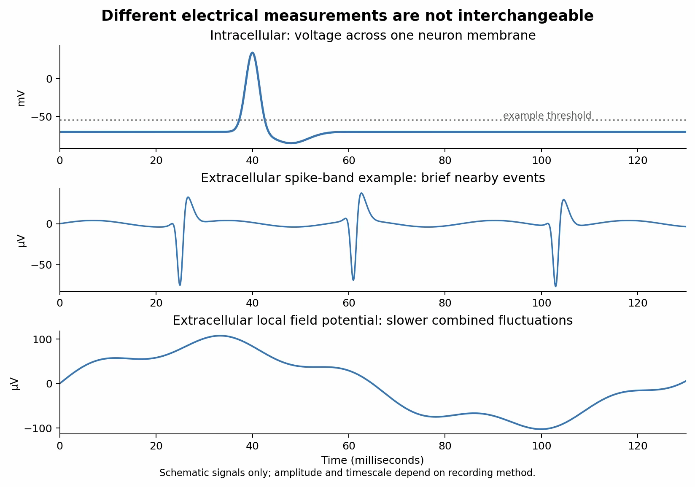
Intracellular action potential versus extracellular spikes and local field potential
One challenge of analyzing LFPs is that the same electrode captures both signals. This forces scientists to use clever mathematical techniques to filter out the signals that they are trying to isolate. Since spike frequencies range in the hundreds of hertz while LFPs oscillate at much lower frequencies, their signals are distinguishable. However, spike waveforms leak into the lower frequency range, so what looks like fast LFP activity can be polluted by nearby spiking signals.
Scale is the main difference between spikes and LFPs. A spike tells you what a single neuron is doing, while a local field potential tells you what a group of neurons are doing together; neither is the whole picture. Imagine trying to single out one person’s conversation at a large party. To hear what they are saying, you have to zone out the rest of the noise, and vice versa. If the goal is to hear the volume of the room (which changes over time), you lose the ability to single out individual voices from the crowd.
There is also a relationship between a single neuron’s signal and its group's signal. When LFPs follow cyclical patterns, some neurons tend to spike at specific phases in the cycle. The following sections will go into much greater detail on this relationship and the connection between LFP rhythms and those of the rest of the body.
- Neural Activity Is Rhythmic A spike tells you about one moment in one particular cell. In comparison, local field
potentials follow very different patterns. LFPs often rise and fall in repeated cycles, sometimes for minutes at a time. Some neurons become active and idle together, over and over, and the LFP records that group behavior as a wave. although not all neurons do so. These repeated LFP fluctuations are called oscillations, and researchers use them to understand neural activity.
To study these oscillations, researchers can analyze them as simpler sine-wave components using mathematical techniques. Researchers group these components by how fast they cycle. The unit is hertz (Hz), meaning cycles per second. The common bands are delta (𝛿: 1 to 4 Hz), theta (𝜃: 4 to 8 Hz), alpha (𝛼: 8 to 12 Hz), beta (𝛽: 15 to 30 Hz), and gamma (𝛾: 30 to 100 Hz). Different bands are associated with different patterns of neural activity and can provide clues about the processes occurring at any given time. These band conventions are not universally agreed upon, so different laboratories draw the lines in slightly different places, and different animals run the same functional rhythm at different speeds. Gamma in the olfactory system of rats and mice sits between 40 and 100 Hz, while in insects (the comparable rhythm) is around 20 Hz (Kay, 2014). The rhythms occur in different species, despite the variations in frequency.
Frequency and period are reciprocals of one another, so a rhythm at 40 Hz completes one cycle every 25 milliseconds, while a 4 Hz rhythm takes 250 milliseconds to complete a cycle. A single spike lasts about a millisecond, meaning dozens of spikes can fit in one slow cycle, so the timing of a spike within a cycle can carry information in some circuits, in addition to how many spikes occur.
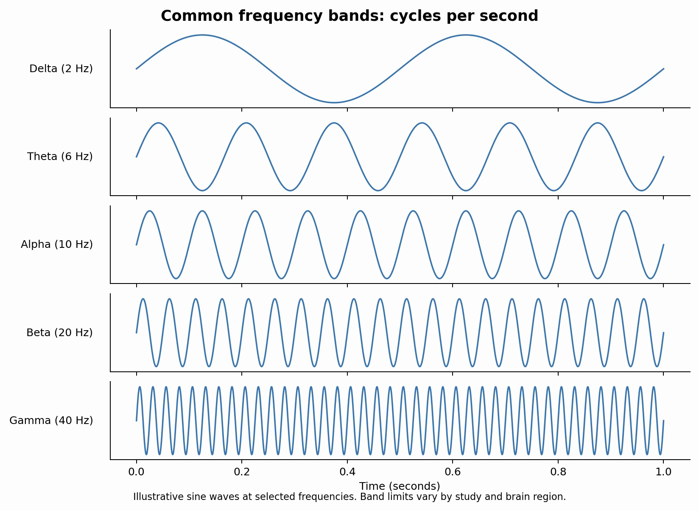
Delta, theta, alpha, beta, and gamma compared
For a very long time, it was reasonable to ask if these LFP oscillations do anything meaningful at all. A bridge vibrates when traffic crosses it, but the vibration is not why the bridge was built. Buzsáki and Draguhn (2004) propose that brain oscillations are not merely that kind of byproduct. Oscillations span five orders of magnitude in frequency and are preserved across species, which suggests they may serve important functions. They also propose that oscillations can bias which inputs reach a population of neurons, temporarily link neurons so they can work together, and support synaptic changes involved in learning. These functions are supported to different degrees across circuits.
Every rhythm in this chapter completes many cycles per day (ultradian rhythm). A gamma cycle finishes roughly three and a half million times in the span of a single circadian day, orders of magnitude faster than rhythms measured in minutes and hours rather than milliseconds.
Most claims about what a brain rhythm does are correlational; a rhythm gets stronger during some behavior, and researchers infer a relationship between the two. However, experiments on olfactory gamma provide stronger evidence for a functional contribution. Experiments reviewed by Kay (2014) found that disrupting odor-related oscillations impaired discrimination of similar odors in insects, while mice with enhanced gamma activity showed improved fine discrimination. These findings support a role for oscillatory coordination, although the manipulations can affect other properties of the circuit. Beta oscillations, at 15 to 30 Hz, also appear during odor learning, although their role is less clearly understood (Kay, 2014).
This brings us back to the single neuron. Recall that some neurons tend to fire at a preferred point in the ongoing LFP cycle rather than at random moments. That point in the cycle is called the phase, which is the position of a wave relative to one complete cycle. A neuron that tends to fire near the trough of a cycle and one that tends to fire near the peak may have identical firing rates while contributing differently to circuit activity. The group rhythm can influence spike timing, while individual neurons supply the spikes.
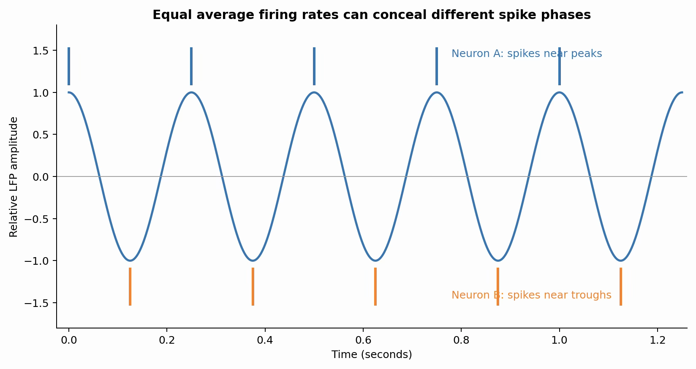
Spikes at different phases of an LFP cycle
- The Connection to Slower Body Rhythms Until now, we have focused on rhythms generated within the brain; but the brain sits
inside a body that keeps its own time, and it turns out, the slowest rhythms discussed here are tied to one of the most ordinary processes there is: breathing. Slower body rhythms can influence faster neural activity.
Neural activity that synchronizes with the breathing cycle has been found in a wide range of mammals, humans included (Tort et al., 2025). The surprising part is where this breathing-related neural activity appears. Neural “coupling” to breathing in the olfactory system has been known for a long time, and it makes intuitive sense, since air carrying odor molecules arrives in rhythmic pulses rather than continuously. However, recent work shows that the coupling extends well past just olfactory and respiratory areas into regions associated with emotion and higher cognition (Tort et al., 2025).
One important pathway begins at the nose, where airflow through the nasal passage leads to waves of sensory activity that travel through the brain, sometimes aligning neuronal activity with the breathing cycle and modulating faster oscillations (Tort et al., 2025). This is an example of phase-amplitude coupling: the phase of a slow rhythm is associated with changes in the amplitude of a faster rhythm.

Breathing-cycle timing and fast oscillation amplitude
It is worth noting that breathing can modulate or “entrain” existing brain rhythms; it does not generate every rhythm with which it becomes synchronized. Brain oscillations continue in the absence of nasal airflow. What breathing does is supply a shared reference signal that distant regions can lock onto, which can help coordinate activity across distant regions, though synchronized activity alone does not prove direct communication.
In rodents, sniffing runs at roughly 4 to 12 Hz, which overlaps with the theta band. A rhythm recorded in the hippocampus at 8 Hz could be hippocampal theta, could reflect respiratory coupling, or both. The two rhythms can occur at similar frequencies without being continuously synchronized (Kay, 2014), so separating them requires recording breathing rather than assuming they are the same. This is a recurring difficulty across chronobiology: two rhythms with the same period are not necessarily the same rhythm.
There is an encapsulating principle that generalizes past just breathing. Slower rhythms can coordinate faster ones. Such interactions appear across multiple timescales, including those discussed here. (See Circulation and the Cardiac Cycle)
- Getting a Signal from a Recording So far, we assumed that spikes and rhythms are simply ready for researchers to read. In
practice, what comes off an electrode is a single messy voltage trace, and getting anything interpretable out of it requires solving two difficult separate problems: figuring out which neuron produced which spike, and figuring out which rhythms are present and when.
An electrode sitting in tissue picks up several neurons at once and nothing in the signal labels them. The first problem is handled by spike sorting. The process occurs in four steps (Rey et al., 2015). First, the recording is bandpass filtered (typically between 300 and 3,000 Hz). Second, the filtered trace is scanned for moments where the voltage crosses a set limit, a technique called thresholding. Third, the shape of each detected waveform is measured. Fourth, waveforms with similar shapes are clustered together and treated as possibly originating from one specific neuron. If a researcher stops after the second step and simply counts every threshold crossing without assigning it to a cell, the result is multi-unit activity: a record of how much the local population is firing, without knowing which specific cells are responsible for what parts of the signal. The procedure partly rests on the assumption that a given neuron produces a relatively consistent waveform and waveforms differ between neurons because each one sits at a different distance and orientation relative to the electrode tip.
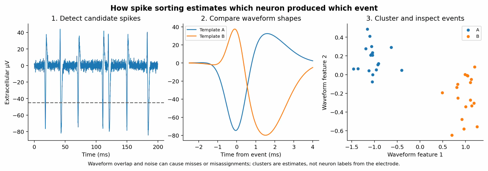
How spike sorting estimates neurons from waveforms
But that assumption has limitations; sorting accuracy degrades significantly when many neurons sit close to an electrode because their waveforms begin to look too similar (Rey et al., 2015). Two spikes arriving at the same instant can overlap and form a shape that matches neither neuron, making them difficult to classify. And most importantly, neurons that fire rarely are easily lost underneath neighboring neurons that fire more often. This matters when studying sparsely firing cells, including some neurons involved in memory-related tasks (Rey et al., 2015). Sorting errors can bias a dataset toward neurons with more detectable or distinctive waveforms.
The second major problem, actually finding rhythms, is handled by the Fourier transform. The idea is that any complex repeating signal can be rebuilt by adding together simple sine waves of different frequencies, amplitudes, and phases. Formally, the Fourier transform is:
While ostensibly quite intimidating, it asks a single question: how much of the signal x(t) looks like a wave of some frequency f? By integrating the signal by the exponential term, researchers can measure how closely a particular wave matches the signal. Now, ask that question for every frequency and the answer is a power spectrum, where the height at each frequency is:
This way, researchers can tell which bands are active from a messy signal. For example, a tall peak at 8 Hz means a strong theta rhythm, while one at 60 Hz means gamma.
The Fourier transform is an incredible tool, but it has one significant limitation. When researchers calculate a single Fourier spectrum for an entire recording, the result summarizes its frequency content without showing when each rhythm occurred. This does not mean the Fourier transform assumes the rhythm is steady. But brain activity does not behave that way. Gamma arrives in short bursts; theta waxes and wanes. When averaged over a long recording, a brief strong burst and a weak continuous rhythm can produce similar spectra.
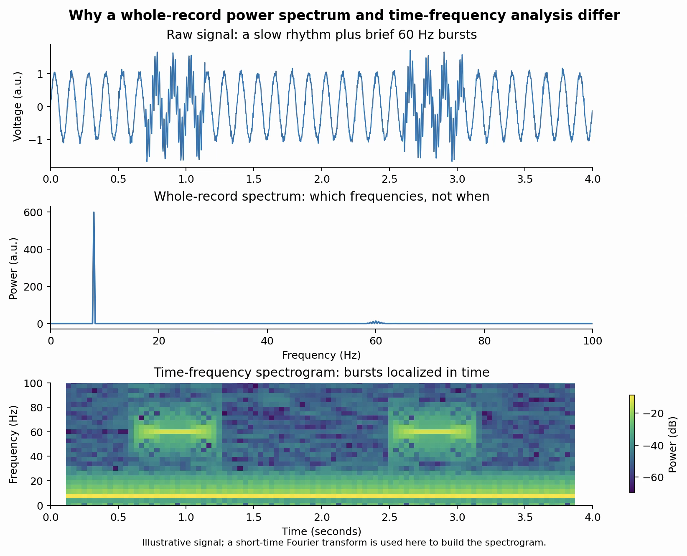
Power spectrum versus time-frequency spectrogram
The wavelet transform solves this by replacing the infinite sine wave with a short, localized wave that can be moved and stretched:

This allows researchers to get information about what is happening at a given frequency at a given moment, rather than averaging across an entire recording.
And of course, signal analysis has another limitation. If a signal is sampled fs times per second, the highest frequency that can be recovered is: fNyquist = fs/2. Without appropriate filtering before sampling, frequencies above that threshold can “fold back” and reappear as misleading lower frequencies (an artifact called aliasing). A fast spike recorded at too low a sampling rate can falsely be disguised as a slow rhythm, which is why extracellular recordings intended for spike sorting typically use high sampling rates, often exceeding 20,000 Hz, along with anti-aliasing filters.
Finally, there are limits to what an LFP can reveal no matter how carefully it is analyzed. The signal reflects population currents, but does not identify which cells within it are responsible. The word “local” is also misleading because currents conduct through brain tissue and are added up at the electrode; some of what is recorded can originate beyond the tissue immediately surrounding the tip (a phenomenon called volume conduction). Herreras (2016) goes even further, arguing that the amplitude of an LFP depends strongly on the topology and spatial arrangement of the sources, not just how much activity is occurring, meaning a weaker but well-aligned source can produce a larger signal than a stronger disorganized one nearby (Pesaran et al., 2018). Truly recovering the underlying neural activity from a field potential generally requires building a model of how the signal was generated in the first place (Einevoll et al., 2013).
- From Biological to Artificial Having seen how much effort goes into recovering timing information from a biological
recording, it is informative to turn to a field where engineers have deliberately built that timing in.
Artificial neural networks are computer programs modeled on biological brains. Each unit receives a set of inputs, multiplies each one by a predetermined number called a synaptic weight, sums the results, and passes the total through a function that produces a single output:
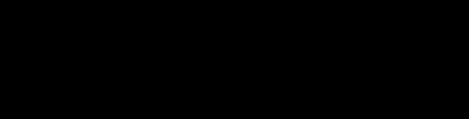
Here the xi are the inputs, the wi are their weights, b is an offset, and φ is a function that turns those inputs into a meaningful result. But notice what is absent from this basic feed-forward equation: there is no explicit spike time t. The output is a number, not a timed spike event, and nothing in the expression says when a spike happened. Everything the preceding sections established about spike timing, about phase, about a neuron firing at the trough rather than the peak of an ongoing rhythm, is not represented in this particular equation. Other artificial neural networks, however, can process time-dependent inputs.

Basic artificial neuron output versus discrete spike times
Models that represent the timing of individual spikes look different. The leaky integrate-and-fire model approximates how membrane voltage accumulates input and leaks toward rest; it is written as a differential equation:

The voltage (V) accumulates a current I(t) and is constantly “leaking” back towards its natural resting value. When enough voltage has accumulated to reach a threshold, the model spikes and resets. This is a drastic simplification of the ion channel process that is described at the start of this chapter. The most important feature is still present though; the output arrives as a discrete spiking signal at a specific time.
Spiking neural networks extend this idea across entire systems, with “neurons” communicating with each other through timed pulses (rather than continuous values), allowing them to process information using spike timing. In one form of spike-timing-dependent plasticity (STDP), which changes the connection strength between neurons based on the precise millisecond timing of their electrical impulses, the synaptic weight depends on the interval between a presynaptic and postsynaptic spike (∆t = tpost - tpre) and the sign of that interval. Under a common STDP rule, the connection strengthens if the presynaptic spike comes just before the postsynaptic spike and weakens if it arrives just after, with the size of the change getting smaller as the interval gets longer. If Neuron A fires before Neuron B, the connection becomes stronger under this simplified timing rule. If Neuron A fires after Neuron B, the connection becomes weaker under the same rule. Actual plasticity depends on the circuit and conditions.
At Cornell University, Imam and Cleland (2020) built a working example of a spiking neural network, constructing a circuit based on the architecture of the mammalian olfactory bulb and implementing it on Intel’s Loihi neuromorphic chip (specifically designed for computation with spikes). The algorithm applies spike-timing-dependent plasticity iteratively over sequential gamma-frequency packets. Basically, the system learns to recognize a complex pattern by taking a rapid sequence of timed snapshots, using the split-second arrival order of electrical pulses in each snapshot to adjust and strengthen selected connections while tuning out the noise. Now what can this do? This result describes the tested model rather than all spiking networks. However, the resulting system learned to distinguish odor patterns after limited exposure, even with interference from other odors.
CHAPTER ADD-INS


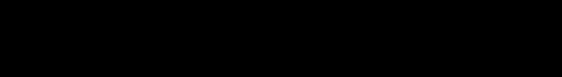
- Intracellular action potential versus extracellular spikes and local field potential

- Delta, theta, alpha, beta, and gamma compared

- Spikes at different phases of an LFP cycle

- Breathing-cycle timing and fast oscillation amplitude
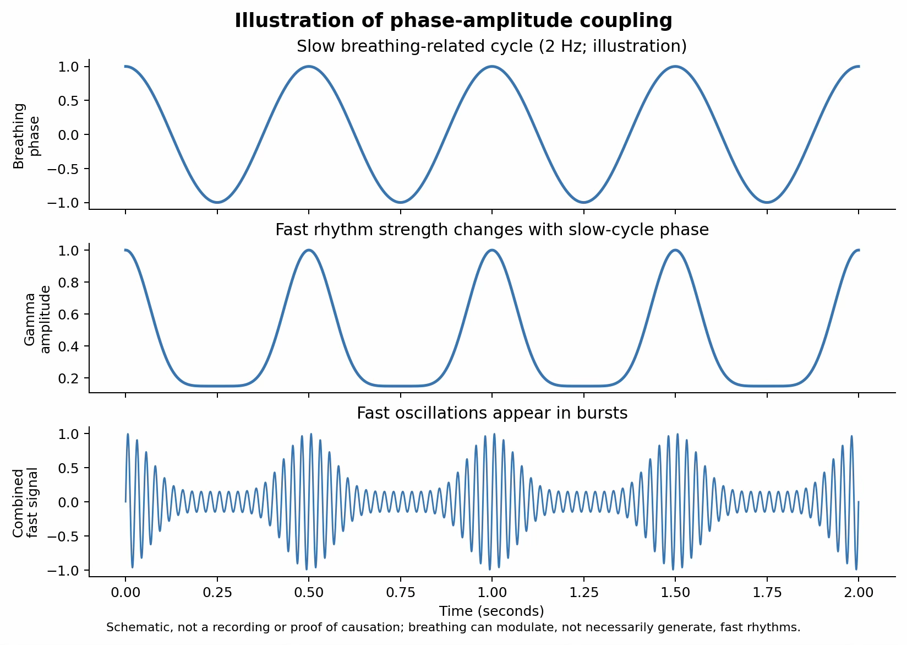
- How spike sorting estimates neurons from waveforms

- Power spectrum versus time-frequency spectrogram

- Basic artificial neuron output versus discrete spike times
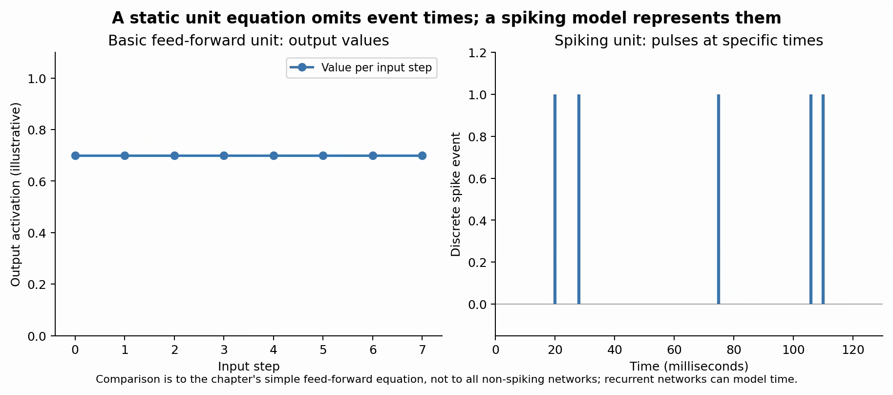
Kay (2014), Figure 4 Example recordings and spectrogram illustrating gamma bursts. Kay (2014), Figure 9 Experimental tests of odor discrimination and gamma oscillations. Tort et al. (2025), Figure 1 Breathing-related activity at multiple neuronal scales.
Yger et al. (2018), Figures Examples of spike detection and sorting.
OpenStax, Section 12.4 Annotated neuronal action-potential waveform.
https://www.jezzamon.com/fourier/GREAT SITE FOR FOURIER DEMONSTRATION
GLOSSARY
| Term | Definition |
|---|---|
| Action potential (spikes) | A rapid reversal of the membrane potential that propagates |
| along an axon to transmit information between neurons. | |
|---|---|
| Membrane potential | The difference in voltage between the inside and outside of a cell membrane. |
| Axon (and hillock) | The axon is the long tail of the neuron that conducts electrical impulses away from itself. The axon hillock is the specialized region of the cell body that connects to the axon where the action potentials are created. |
| Refractory period | The short time after a neuron fires (action potential) where it cannot fire again in succession, unless a much stronger stimulus is provided. |
| Extracellular recording | A method of measuring electrical activity from outside the cell membrane (using electrodes). |
| Intracellular recording | A method of measuring electrical activity in just a single cell (with a microelectrode) |
| Oscillation | Repeating and rhythmic fluctuations in electrical activity across a group of neurons. |
| Frequency | The number of cycles (waves) an oscillation completes in a second (measured in Hertz) |
| Phase | The position of a wave at a specific point with respect to a complete cycle. |
| Power spectral density | A mathematical measure that shows how the energy of a signal is distributed across different frequencies. |
| Bandpass filter | A signal processing tool that blocks frequencies outside a certain range, allowing to single out certain wavelengths. |
| Local field potential | The recorded extracellular electrical signal that reflects the synaptic activity of a local population of cells. |
| Phase-amplitude coupling | A special type of cross-frequency coupling of a brain signal interaction where the strength (amplitude) of a fast brain wave is controlled by the cycle (phase) of a slow brain wave. |
| Cross-frequency coupling | An interaction between different frequency bands where neural oscillations interact with each other to process information. |
| Entrainment | The interaction where an internal brain rhythm is affected by external periodic rhythms (such as sensory stimulus or behavioral cycles). |
| Spike sorting | A data processing step used to group extracellular signals to |
| individual neurons. | |
|---|---|
| Fourier transform | A mathematical tool that is used to break down complex signals into its individual sine wave frequency components, revealing which rhythms are present and how strong they are. |
| Wavelet transform | A similar tool to the Fourier transform that breaks down a signal into localized wavelets, allowing analysis of how frequency components change over time. |
| Multi-unit activity (MUA) | The combined activity of several neurons that are recorded by a single electrode. |
| Nyquist frequency | The highest frequency that can be captured without distortions (half the sampling rate). |
| Aliasing | Distortions and “ghost frequencies” that occur when not abiding by the Nyquist frequency threshold. |
| Signal-to-noise ratio | A measure that compares the meaningful neural parts of a signal to background noise. |
| Thresholding | A processing technique used to separate real neural signals from noise using a specific voltage limit. |
| Integrate-and-fire model | A model of a neuron that adds up incoming electrical inputs over time until a threshold is reached and then “fires.” |
| Memristor | An electronic component that mimics biological synapses by “remembering” the amount of charge that previously flowed through it. |
| Spiking Neural Network (SNN) | An artificial neural network that uses timed pulses (spikes) instead of continuous values to communicate. |
| Neuromorphic computing | An approach to computer engineering where systems are designed to mimic natural biological processes and structures of the nervous system. |
| Neuromorphic hardware | Specially designed circuits designed to use brain-like structures to execute neural networks. |
| Synaptic weights | In an artificial neural network, these are the values that determine how strong the connection between two nodes are (how much they influence one another). |
| Artificial neural network (ANN) | A computer program modeled after biological brains, where continuous values are created by summing weighted inputs rather than discrete spikes. |
| Volume conduction | The spread of electrical current through brain tissue, allowing an electrode to record signals generated away from its tip |
|---|---|
| Spike-timing-dependent plasticity (STDP) | An algorithm used to update the connection model weights of an ANN where the change in a synaptic connection depends on the interval between a presynaptic and postsynaptic spike (and which came first) |
REFERENCES
Sources:
Buzsáki, G., Anastassiou, C. A., & Koch, C. (2012). The origin of extracellular fields and currents: EEG, ECoG, LFP and spikes. Nature Reviews Neuroscience, 13(6), 407–420. https://doi.org/10.1038/nrn3241
Buzsáki, G., & Draguhn, A. (2004). Neuronal oscillations in cortical networks. Science, 304(5679), 1926–1929. https://doi.org/10.1126/science.1099745
Einevoll, G. T., Kayser, C., Logothetis, N. K., & Panzeri, S. (2013). Modelling and analysis of local field potentials for studying the function of cortical circuits. Nature Reviews Neuroscience, 14(11), 770–785. https://doi.org/10.1038/nrn3599
Herreras, O. (2016). Local field potentials: Myths and misunderstandings. Frontiers in Neural Circuits, 10, 101. https://doi.org/10.3389/fncir.2016.00101
Imam, N., & Cleland, T. A. (2020). Rapid online learning and robust recall in a neuromorphic olfactory circuit. Nature Machine Intelligence, 2(3), 181–191.
https://doi.org/10.1038/s42256-020-0159-4 Kay, L. M. (2014). Circuit oscillations in odor perception and memory. In E. Barkai & D. A. Wilson (Eds.), Progress in brain research: Odor memory and perception (Vol. 208, pp. 223–251). Elsevier. https://doi.org/10.1016/B978-0-444-63350-7.00009-7
Pesaran, B., Vinck, M., Einevoll, G. T., Sirota, A., Fries, P., Siegel, M., Truccolo, W., Schroeder, C. E., & Srinivasan, R. (2018). Investigating large-scale brain dynamics using field potential recordings: Analysis and interpretation. Nature Neuroscience, 21(7), 903–919. https://doi.org/10.1038/s41593-018-0171-8
Rey, H. G., Pedreira, C., & Quian Quiroga, R. (2015). Past, present and future of spike sorting techniques. Brain Research Bulletin, 119, 106–117.
https://doi.org/10.1016/j.brainresbull.2015.04.007
Tort, A. B. L., Laplagne, D. A., Draguhn, A., & González, J. (2025). Global coordination of brain activity by the breathing cycle. Nature Reviews Neuroscience, 26(6), 333–353. https://doi.org/10.1038/s41583-025-00920-7 UNIT AND CHAPTER
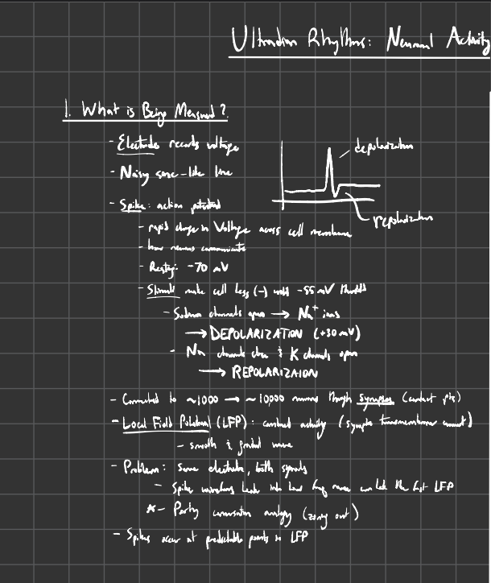
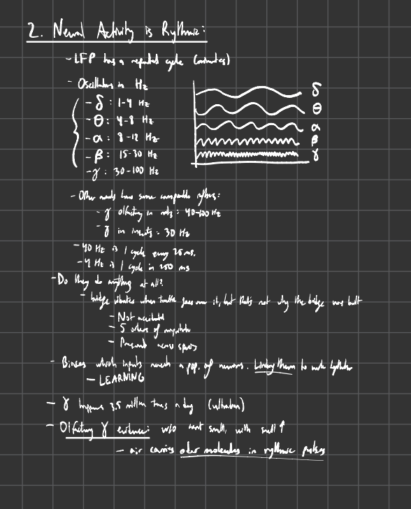
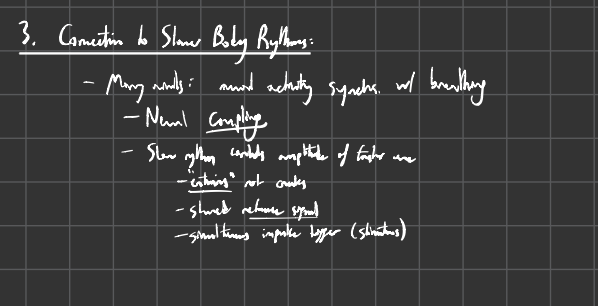
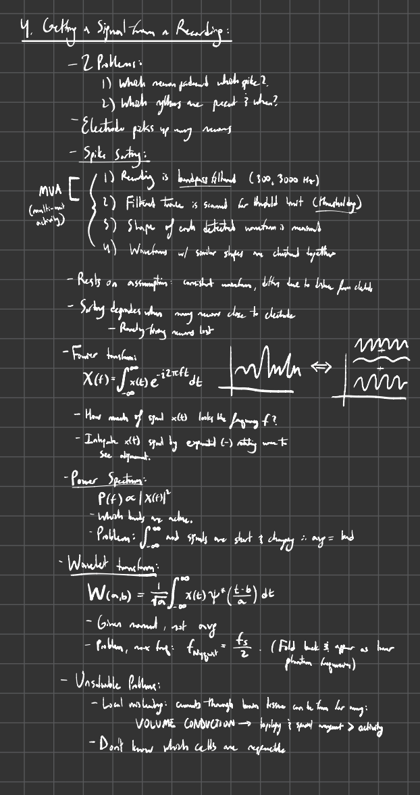
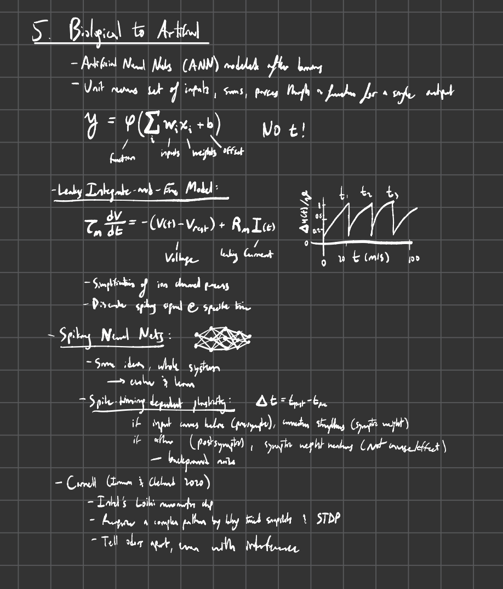
Unit: Infradian Rhythms